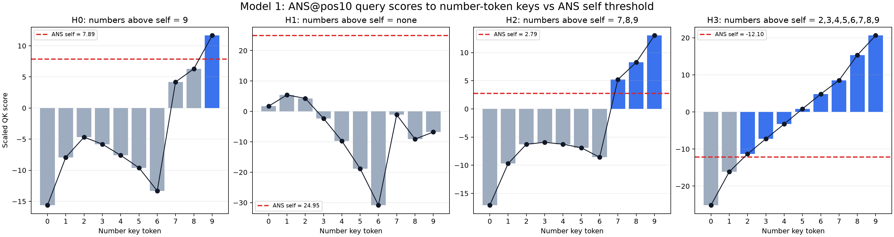
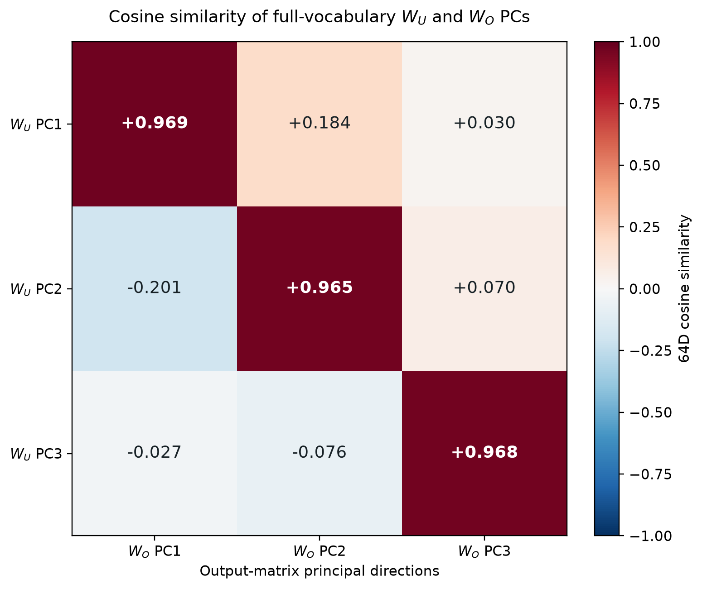

Main results¶
This analysis was developed for the Bau Lab April challenge.
Summary. The model solves the task through a piecewise attention circuit at the
[ANS]position. For maximum0, all four heads attend to[ANS]itself. For maximum1, H3 uses a soft mixture of[ANS]and the positions containing1. For maxima2–6, H3 reads the maximum token; for7–8, H2 and H3 read it; and for9, H0 joins H2 and H3. H1 remains a nearly constant self-reading head. Replacing the final attention rows with this circuit preserves the model's predictions on all 100,000 possible inputs.
| True maximum | H0 | H1 | H2 | H3 |
|---|---|---|---|---|
0 |
[ANS] |
[ANS] |
[ANS] |
[ANS] |
1 |
[ANS] |
[ANS] |
[ANS] |
soft mix of [ANS] and 1 |
2–6 |
[ANS] |
[ANS] |
[ANS] |
maximum |
7–8 |
[ANS] |
[ANS] |
maximum | maximum |
9 |
maximum | [ANS] |
maximum | maximum |
Changing only these final attention rows is sufficient to steer the model's answer, and the complete piecewise replacement reproduces all 100,000 predictions. The resulting head outputs are added and read by the unembedding. It can be shown that this computation can be performed in a reduced three-dimensional subspace.
Model and notation¶
Transformer computation¶
The model has one attention-only layer, a 64-dimensional residual stream,
and four 16-dimensional attention heads. For a generic head \(h\):
| Stage | Notation |
|---|---|
| Input residual stream | \(R = W_E[\text{token}] + P \in \mathbb{R}^{N \times 64}\) |
| Attention processing | \(Q_h = R W_Q^h,\quad K_h = R W_K^h,\quad V_h = R W_V^h \in \mathbb{R}^{N \times 16}\) \(A_h = \operatorname{softmax}\!\left(\frac{Q_h K_h^T}{\sqrt{16}} + M_{\text{causal}}\right) \in \mathbb{R}^{N \times N}\) \(a_h = A_h[-1,:] \in \mathbb{R}^{1 \times N}\) \(V_h^a = a_h V_h \in \mathbb{R}^{1 \times 16}\) |
| Attention output multiplied with output matrix | \(z_h = V_h^a W_O^h \in \mathbb{R}^{1 \times 64},\quad W_O^h \in \mathbb{R}^{16 \times 64}\) |
| Addition of all heads | \(z = \sum_{h=0}^{3} z_h \in \mathbb{R}^{1 \times 64}\) |
Residual addition at [ANS] |
\(R_{\text{final}}[-1,:] = R[-1,:] + z\) |
| Unembedding | \(F = R_{\text{final}}[-1,:] W_U \in \mathbb{R}^{1 \times 14},\quad W_U \in \mathbb{R}^{64 \times 14}\) |
| Prediction | \(\operatorname*{argmax}_t F_t\) |
Attention routing at the [ANS] token¶
Looking at attention patterns¶
We only care about the model's response at the [ANS] token, which is the
final score vector \(F\) in the table above. In each head, the attention
component that influences \(F\) is \(a_h\): the vector that says which source
tokens [ANS] attends to. Below, we visualize this attention when each digit
\(d\) is the maximum number. For each input, attention to repeated occurrences
of the same token is first summed; these token-level distributions are then
averaged over every input whose true maximum is \(d\).

[ANS] query. Each matrix is 4 heads x 14 token identities and
includes every five-digit input whose true maximum is d. If a
token occurs more than once in an input, its attention mass is summed
before averaging. The ten conditions partition all 100,000 inputs, and
every head row sums to 100%.
Causal manipulation of the [ANS] attention rows¶
As the maximum number increases, more heads are recruited. The all-head
[ANS]-self pattern acts as a baseline that decodes as 0. A recruited head
changes \(a_h\) from [ANS] to the maximum-number token, thereby changing
\(V_h^a = a_h V_h\) and the residual-stream write \(z_h = V_h^a W_O^h\). H3 is
recruited for maxima 2–6; H2 joins H3 for maxima 7–8; and H0 joins H2 and
H3 for maximum 9.
This interpretation makes a causal prediction: changing only \(a_h\) should change the answer, even while every model weight, token embedding, positional embedding, and all earlier attention rows remain fixed. The prediction holds.
H3 steers [2, 3, 4, 5, 6]¶
The unmodified model answers 6. In each intervention below, \(a_0\), \(a_1\),
and \(a_2\) are forced one-hot to [ANS]; only \(a_3\) is forced one-hot to a
selected digit position.
| Input | Forced attention rows \(a_h\) | Model output |
|---|---|---|
[2, 3, 4, 5, 6] |
\(a_0,a_1,a_2 \rightarrow\) [ANS]; \(a_3 \rightarrow 2\) |
2 |
[2, 3, 4, 5, 6] |
\(a_0,a_1,a_2 \rightarrow\) [ANS]; \(a_3 \rightarrow 3\) |
3 |
[2, 3, 4, 5, 6] |
\(a_0,a_1,a_2 \rightarrow\) [ANS]; \(a_3 \rightarrow 4\) |
4 |
[2, 3, 4, 5, 6] |
\(a_0,a_1,a_2 \rightarrow\) [ANS]; \(a_3 \rightarrow 5\) |
5 |
H2 is recruited at 7¶
The unmodified model answers 8 for [4, 5, 6, 7, 8]. Targets 4–6 use
the lower-number circuit: \(a_2\) stays on [ANS] while \(a_3\) reads the
requested digit. To produce 7, both \(a_2\) and \(a_3\) must read the 7 token.
| Input | Forced attention rows \(a_h\) | Model output |
|---|---|---|
[4, 5, 6, 7, 8] |
\(a_0,a_1,a_2 \rightarrow\) [ANS]; \(a_3 \rightarrow 4\) |
4 |
[4, 5, 6, 7, 8] |
\(a_0,a_1,a_2 \rightarrow\) [ANS]; \(a_3 \rightarrow 5\) |
5 |
[4, 5, 6, 7, 8] |
\(a_0,a_1,a_2 \rightarrow\) [ANS]; \(a_3 \rightarrow 6\) |
6 |
[4, 5, 6, 7, 8] |
\(a_0,a_1 \rightarrow\) [ANS]; \(a_2,a_3 \rightarrow 7\) |
7 |
Low-dimensional computation¶
There are only 10 possible digit answers, while the residual stream has 64
dimensions. It is therefore reasonable to expect that the answer-writing
computation may use a much lower-dimensional representation.
To test this, we perform PCA on the model's 64 x 64 output matrix \(W_O\). If
\(Q_k\) contains the top \(k\) principal directions, projecting \(W_O\) into this
basis reduces it from 64 x 64 to 64 x k. Equivalently, each head's
16 x 64 output matrix \(W_O^h\) becomes 16 x k.
We then use the same output-derived basis for the unembedding matrix. This
reduces \(W_U\) from 64 x V to k x V. Thus the heads write into a shared
\(k\)-dimensional space, and the unembedding reads from that same space. The PCA
basis is obtained only from \(W_O\); PCA is not fitted separately to \(W_U\).
How many dimensions are sufficient?¶
We keep increasing the number of retained principal components and evaluate
the projected computation exhaustively on all 100,000 possible inputs. The
prediction is taken over the full 14-token vocabulary.
| Output-PCA basis retained | Output-matrix variance captured | Unembedding variance captured | 14-way accuracy |
|---|---|---|---|
| PC1 | 59.23% | 59.25% | 40.952% |
| PC1 + PC2 | 84.06% | 85.04% | 57.758% |
| PC1 + PC2 + PC3 | 88.34% | 91.51% | 100.000% |
With only three principal components, the projected model reaches 100%
accuracy. The four head outputs can therefore be added and read by the
unembedding inside a three-dimensional subspace without changing any of the
model's decisions. This shows that the computation needed to solve this task
is low-dimensional.
Visualizing the three-dimensional computation¶
Because three dimensions are sufficient, we can plot the ten digit unembedding vectors and the head outputs in the same space. Both interactives below use the top three principal directions obtained from \(W_O\).
Baseline plus recruited corrections¶
When all heads attend to [ANS], their combined output gives the baseline
answer 0. The first interactive shows how this baseline is corrected as
heads are recruited to read higher digits. Each arrow shows the change
contributed by a recruited head, and the endpoint shows the resulting summed
head output in the three-dimensional unembedding space.
In the displayed decomposition, the fixed vector \(B\) contains the [ANS]
writes from H0, H1, and H2, while H3 is shown as the first answer-dependent
arrow. For outputs 7–9, H2 replaces its [ANS] write with a digit write; H0
does the same for output 9.
Open the baseline-and-corrections interactive
Direct output from each head¶
The second interactive shows the same computation without regrouping it into a baseline and corrections. The selected maximum is the enlarged green dot. Each thin colored arrow is one head's complete output \(z_h = V_h^a W_O^h\) in the three-dimensional space. The thicker black arrow is the sum of all four head outputs. The bar chart shows the dot product of this sum with each vocabulary token's projected unembedding vector.
Open the direct-head-writes interactive
Supplementary results¶
QK score hints at head recruitment¶
For each head, the responsible query vector is the query of the [ANS]
token. We can compare this query with the key vector of each number and with
the key vector of [ANS] itself. Using the notation above:
The figure compares the scaled QK scores
When \(s_h(n) > s_h(\text{ANS})\), the [ANS] query has a larger dot product
with the number key than with its own key. In this model, these crossings
reproduce the head-recruitment thresholds: H3 crosses [ANS] for numbers
2-9, H2 for 7-9, H0 only for 9, and H1 never crosses it.

[ANS] self-key score. The [ANS] query and self key
include the fixed position embedding at position 10; the plotted number
keys use the number-token embeddings.
H0's partial attention to 8 is inconsequential¶
Although 7 and 8 are placed in the same row of the attention figure, the
max-8 pattern is slightly different. Across all 26,281 inputs whose true
maximum is 8, H0 assigns 16.83% of its attention to token 8, while
82.40% remains on [ANS]. Thus H0 partially attends to 8, but [ANS] is
still its largest source.
This H0 attention to 8 is not consequential. We tested two interventions
while leaving the measured outputs of H1, H2, and H3 unchanged:
- Set H0's attention to every
8position to zero and move exactly that probability mass to the[ANS]position. - Replace H0's complete attention row with one-hot attention to
[ANS].
Both interventions were checked in the full model and in the three-dimensional computation.
H0 attention at [ANS] |
Full 64D model | Top 3 output-matrix PCs | Top 3 unembedding PCs |
|---|---|---|---|
| Measured attention | 26,281 / 26,281 | 26,281 / 26,281 | 26,281 / 26,281 |
Move all H0 8 mass to [ANS] |
26,281 / 26,281 | 26,281 / 26,281 | 26,281 / 26,281 |
Force H0 one-hot to [ANS] |
26,281 / 26,281 | 26,281 / 26,281 | 26,281 / 26,281 |
Therefore H0's secondary 16.83% read of token 8 is unnecessary for the
max-8 decision, including inside either three-dimensional subspace. H2 and
H3 already supply sufficient routing for the model to answer 8.
PCs of the unembedding matrix also work¶
Above, we used the basis obtained from PCA of the output matrix. Since the
output and unembedding matrices operate in nearby low-dimensional subspaces,
the construction can also be reversed: fit PCA to the full 14-token
unembedding matrix, use those same directions to reduce each head's output
matrix, and perform the readout in that shared basis.
The following check again covers all 100,000 inputs and takes the argmax over
the full 14-token vocabulary. Every row uses PCs obtained only from the
centered unembedding matrix.
| Unembedding-PCA basis retained | Unembedding-matrix variance captured | Output-matrix variance captured | 14-way accuracy |
|---|---|---|---|
| PC1 | 62.01% | 56.45% | 40.952% |
| PC1 + PC2 | 87.37% | 82.01% | 86.318% |
| PC1 + PC2 + PC3 | 94.04% | 86.23% | 100.000% |
Thus the PCs of the unembedding matrix also work: three dimensions still give
100% accuracy when the same basis is applied to the output matrix.
The two top-three subspaces are close, though not exactly identical. The plot
below shows the exact 64-dimensional cosine between each full-vocabulary
\(W_U\) PC and each stacked-output \(W_O\) PC. Because a PCA axis has an arbitrary
sign, each \(W_O\) PC is sign-aligned with the corresponding \(W_U\) PC before the
matrix is displayed.

The angle mystery¶
If you have used the interactive panel above, you may notice a strange result. When
the maximum is 1, the final output is more closely aligned by cosine with the
unembedding of 2, yet its dot product is highest with the unembedding of 1.
Similarly, when the maximum is 2, the output aligns more closely with the
unembedding of 3, while the dot product is highest for 2.
The interactive displays the head sum \(z\). The table below goes one step
further and uses the actual final state
\(R_{\text{final}}[-1,:] = R[-1,:] + z\), so the effect is not caused by omitting
the initial [ANS] residual. These are the canonical interactive examples
[0, 0, 1, 0, 0] and [0, 0, 2, 0, 0] in the same top-three output-PCA basis.
| True maximum | Candidate \(d\) | Cosine with \(R_{\text{final}}^{(3)}[-1,:]\) | \(\lVert U_d^{(3)}\rVert\) | Dot product |
|---|---|---|---|---|
| 1 | 1 | 0.931245 | 0.822791 | 222.0728 |
| 1 | 2 | 0.993939 | 0.643628 | 185.4116 |
| 2 | 2 | 0.916275 | 0.643628 | 108.2686 |
| 2 | 3 | 0.973806 | 0.539593 | 96.4673 |
For one input, the norm of \(R_{\text{final}}^{(3)}[-1,:]\) is common to every candidate. Therefore the only candidate-dependent norm in the dot-product argmax is the norm of the projected unembedding vector:
What if each row of the unembedding matrix is forced to norm 1?¶
The model chooses its response using the largest unembedding dot product. For
the final [ANS] state \(h\) and the unembedding row \(U_d\) for candidate token
\(d\),
For one input, \(\lVert h \rVert\) is common to every candidate. In the released
model, the winning logit can therefore depend on both the unembedding norm
\(\lVert U_d \rVert\) and the cosine alignment \(\cos(\theta_d)\). This motivates a
controlled retraining experiment: after every optimizer step, force all 14
rows of the 64-dimensional unembedding matrix to have norm 1. If the model
still solves the task, its full-space readout must be angular because
Three independently trained constrained models reached 100% accuracy on all
100,000 inputs. The primary seed also has 100% cosine-only accuracy in the
full 64-dimensional residual space, as required by the unit-norm constraint.
This produces an exact angular readout in the original space.
The low-dimensional projection does not preserve equal unembedding norms. In
the primary model's top-three output-matrix-PC space, the digit-unembedding
norms range from 0.732 to 0.956. The projected dot-product readout retains
100% accuracy, but normalizing the projected vectors and decoding by cosine
alone gives only 95.317% accuracy.
Thus, forcing unit unembedding norms produces angular coding in 64d, but not
after a lossy low-dimensional projection. The three-dimensional decision still
depends on both the projected unembedding norm and its angle with the projected
head output. See the
complete unit-norm retraining experiment
for training details, attention recruitment, additional seeds, and the
interactive geometry.
Why we did not add the initial residual stream¶
It turns out that just using the output of the heads and processing it through
the unembedding matrix already gives 100% accuracy. We therefore skipped one
extra step in the low-dimensional explanation because it does not change any
of the model's decisions.
| State passed to the full \(14\)-token unembedding | Correct | Accuracy |
|---|---|---|
| Head sum only, \(z\) | 100,000 / 100,000 | 100.000% |
| Full state, \(R[-1,:] + z\) | 100,000 / 100,000 | 100.000% |
The initial residual is not numerically zero and it does change the logits. It is omitted here only because it never changes the argmax on this task.
Head 1 is almost, but not completely, dispensable¶
From the attention figures, H1 never switches from [ANS] to a digit token.
However, attending to [ANS] still produces a nonzero output vector. The
zero-ablation experiment shows that removing the complete output of H1
preserves near-perfect accuracy.
| Intervention | Correct | Accuracy |
|---|---|---|
| No ablation | 100,000 / 100,000 | 100.000% |
| Set the complete H1 output to zero | 99,997 / 100,000 | 99.997% |
It gets all but three cases correct. The H1-ablation failures are:
| Input | Correct answer | Output after H1 ablation |
|---|---|---|
[0, 0, 0, 1, 0] |
1 | 0 |
[0, 0, 1, 0, 0] |
1 | 0 |
[8, 8, 8, 8, 8] |
8 | 9 |